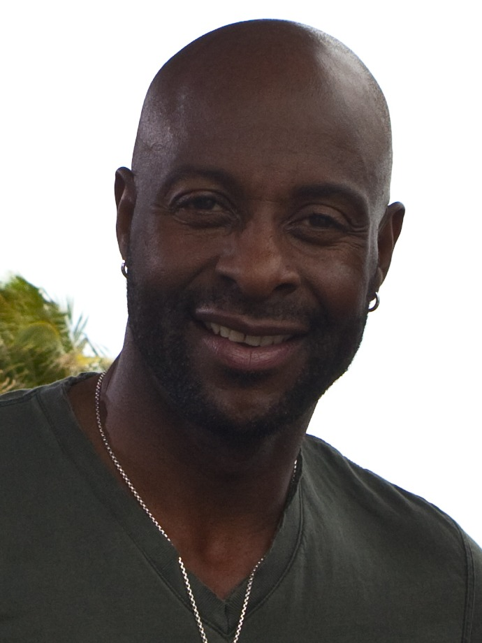

Why the Bay Area Is One of the Greatest Sports Regions in America
Football dynasties, even-year baseball miracles, and a basketball revolution. Few places on the map can match the trophy case around the Bay.

Every sports region likes to argue it is the best. Most of them are bluffing. The Bay Area does not have to bluff. Across football, baseball, and basketball, the teams that call this corner of California home have stacked up championships, produced some of the most iconic players the games have ever seen, and given fans a run of golden eras that few places anywhere can match. If you grew up here, you did not just watch great sports. You watched dynasties.
The football gold standard
Start with the San Francisco 49ers, who between the 1981 and 1994 seasons won five Super Bowls and set the template for what a modern NFL dynasty looks like. Joe Montana became the coolest man in sports, Jerry Rice became the greatest receiver who ever lived, and Steve Young stepped out of a legend's shadow to add a fifth title of his own. For a decade and a half the road to the championship ran through the Bay, and the standard those teams set still shapes how this region feels about football.
Read the full story of the 49ers dynasty →
Even-year baseball magic
Then there are the San Francisco Giants, who waited more than fifty years for a World Series title after moving west and then won three of them in five seasons. The 2010, 2012, and 2014 championships turned a band of lovable misfits into a genuine dynasty, powered by Buster Posey behind the plate, the postseason brilliance of Madison Bumgarner, and the steady hand of manager Bruce Bochy. The even-year pattern became folklore, and Game 7 of the 2014 World Series remains one of the greatest individual performances the sport has ever produced.
Read the full story of the Giants dynasty →
The basketball revolution
And then the Golden State Warriors changed the sport itself. After a 1975 title that stood alone for decades, the franchise built a modern dynasty around Stephen Curry, Klay Thompson, and Draymond Green, winning championships in 2015, 2017, 2018, and 2022 and turning the three-point shot into a way of life. The rest of the NBA is still playing catch-up to the style those teams perfected.
Read the full story of the Warriors titles →
A region built on winning
Add it up and the picture is staggering. Five Lombardi Trophies for the 49ers, three World Series titles for the Giants, five NBA championships for the Warriors, plus the deep history of the Athletics, the passionate hockey following behind the Sharks, and powerhouse college programs at Stanford and Cal. This is not a region that occasionally stumbles into a good team. It is a region that has produced era-defining greatness in sport after sport, decade after decade.
That is the tradition Bay Area Sports Blog was built to celebrate and to argue about. The banners are already hanging. The next chapter is always being written. And around here, the bar was set by legends, which is exactly the way we like it.
Championship Timeline- 1975Warriors win it all behind Rick Barry
- 1981–1994The 49ers win five Super Bowls
- 2010–2014The Giants win three World Series
- 2015–2022The Warriors win four more NBA titles
“Around here, the bar was set by legends, which is exactly the way we like it.”
Bay Area Sports Blog- Five Lombardi Trophies for the 49ers
- Three even-year World Series titles for the Giants
- Five NBA championships for the Warriors
- Deep traditions with the Athletics, Sharks, Stanford, and Cal